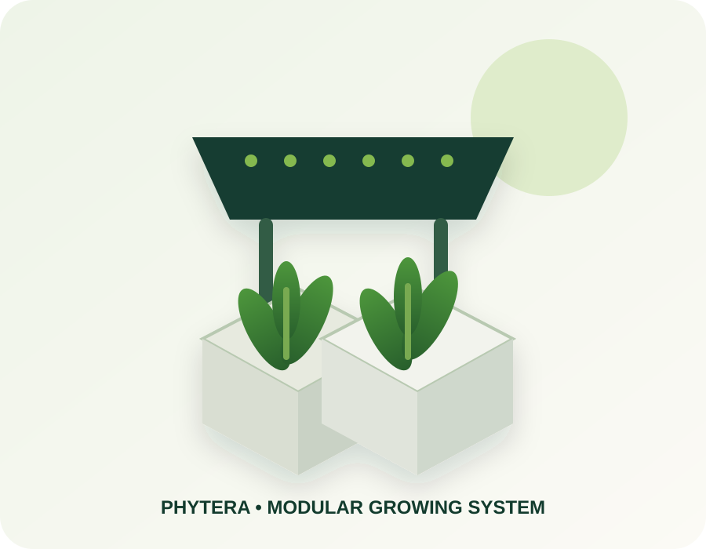
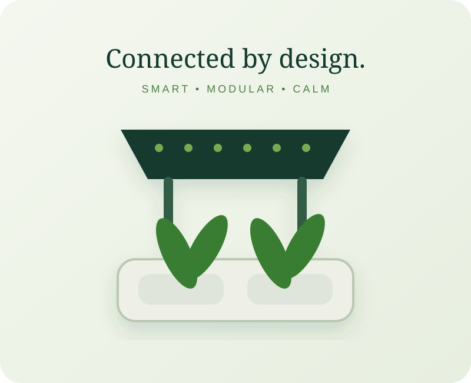
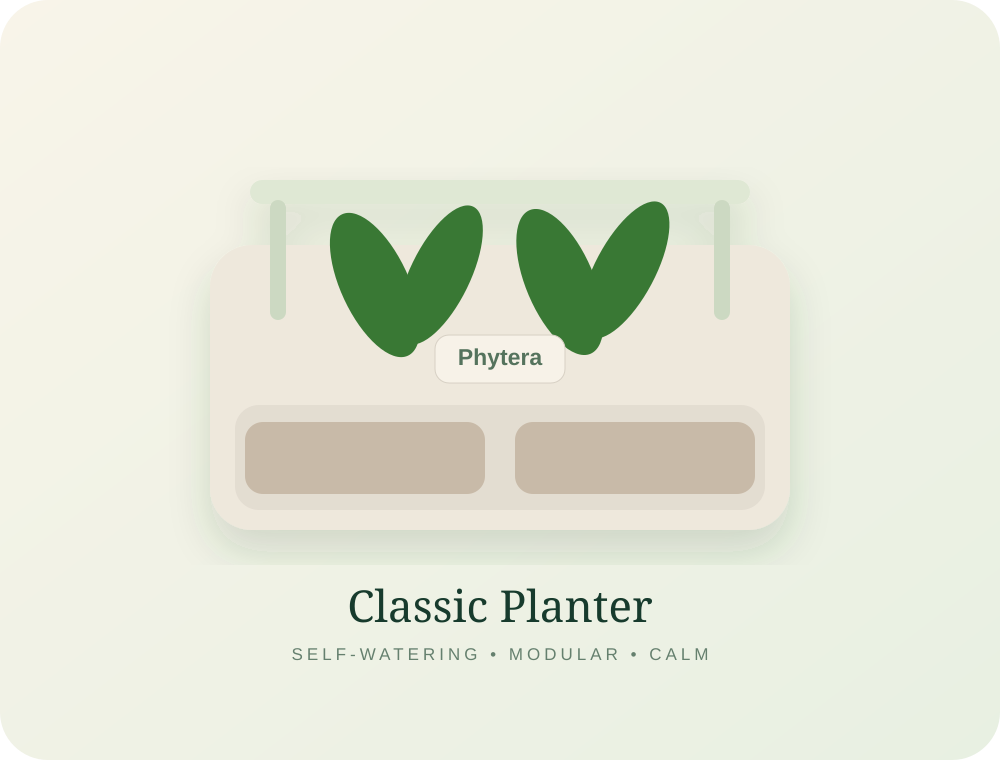
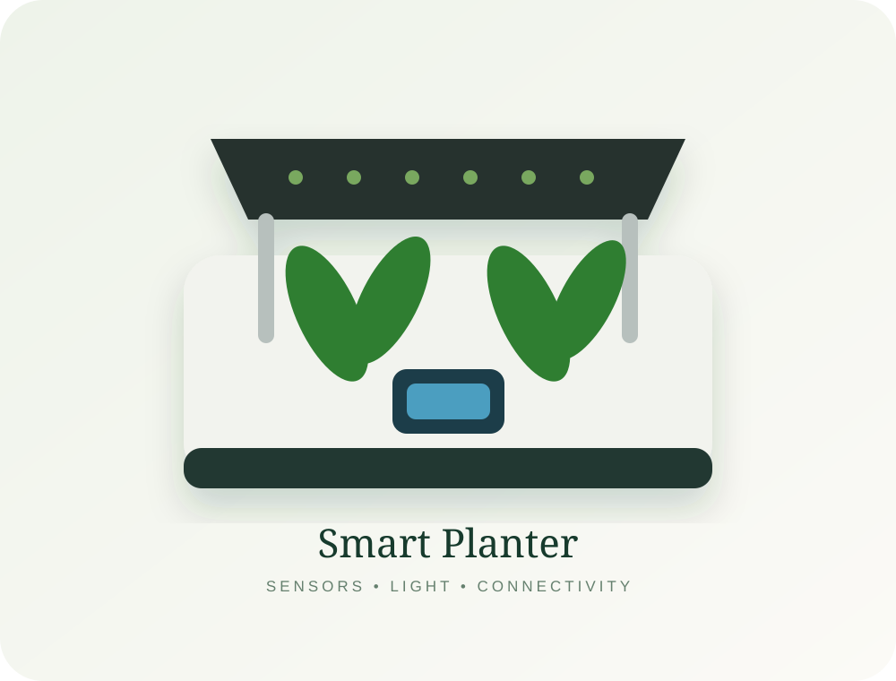
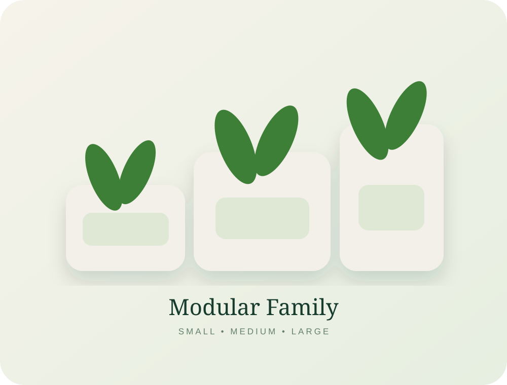
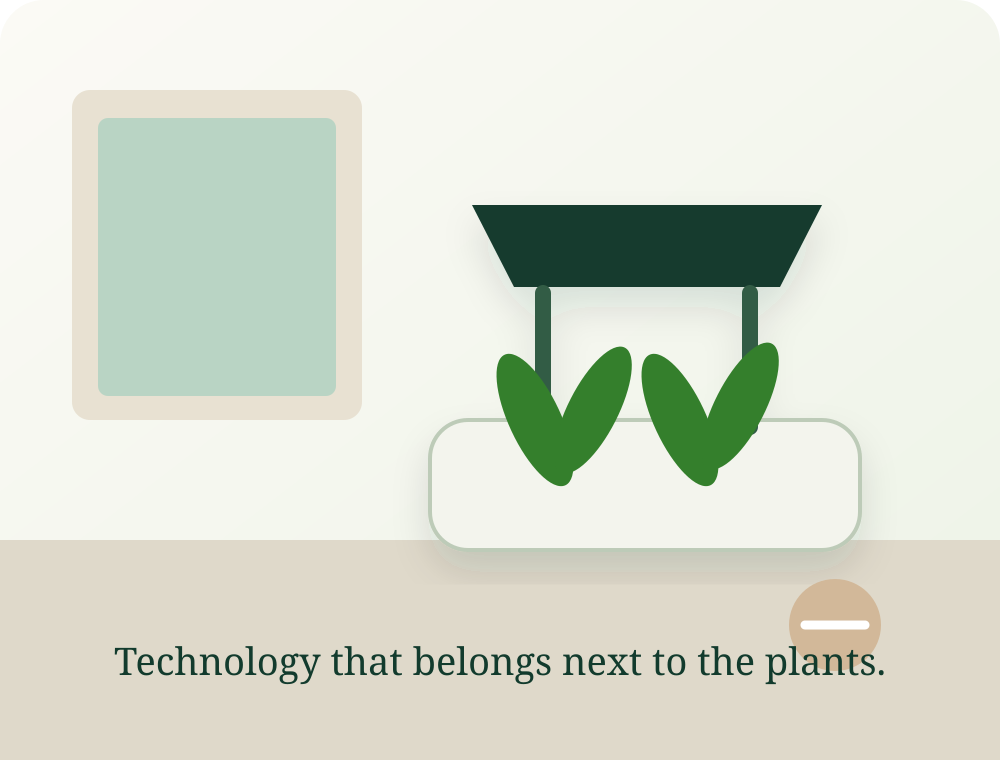

VISION
Modernize agriculture from the countertop to the field.
Phytera aims to modernize urban and commercial agriculture through modular smart growing systems, community-scale agricultural infrastructure, and farm optimization technologies.
MODULAR • SMART • SUSTAINABLE
Phytera turns plant care into a calm, connected experience—starting with thoughtful self-watering planters and growing into a serious agricultural intelligence platform.

VISION
Phytera aims to modernize urban and commercial agriculture through modular smart growing systems, community-scale agricultural infrastructure, and farm optimization technologies.
MISSION
Our mission is to create accessible, scalable, data-driven growing solutions that improve food sustainability, water efficiency, and plant health for individuals, communities, and commercial agriculture.
PHASE 1 • URBAN SMART GROWING
Phytera begins with beautiful modular planters, simple hydroponics, compact grow-light solutions, and recurring seed and nutrient refills—then evolves toward sensing, automation, connectivity, and plant-health intelligence.
Three scalable planter sizes designed around interchangeable growing pods and a consistent product ecosystem.
A simple self-watering foundation for a lower-friction first product and an approachable growing experience.
Customers can choose an integrated lighting setup or a clean stackable frame for naturally lit spaces.
Moisture sensing, water-level alerts, Bluetooth/WiFi connectivity, app guidance, nutrient scheduling, and AI-assisted care.

THE PRODUCT WE'RE BUILDING TOWARD
These planter concepts show the intended Phytera product language: soft forms, calm colors, visible plant life, modular parts, and technology that feels supportive instead of distracting. The goal is not “a gadget with a plant in it.” It is a growing system people actually want to live with.
The approachable foundation: a refined self-watering planter with a visible reservoir, wick-fed growing system, and a frame that can accept future lighting and accessories.


SMART EVOLUTION
Add integrated grow lighting, water and moisture sensing, connectivity, and a calm status display without losing the friendly product feel.

PRODUCT FAMILY
A shared design language across multiple sizes means the same growing pod, refill, and accessory ecosystem can scale with the customer.
THE CONNECTED EXPERIENCE
The product roadmap deliberately validates the physical growing system before adding the digital layer.
VERSION 1
Stackable planter, optional grow light, wick hydro system, refined industrial design, and no app required.
VERSION 2
Add soil-moisture sensing, water-level alerts, basic Bluetooth/WiFi connectivity, and the first Phytera app experience.
VERSION 3
Growth tracking, nutrient scheduling, care guidance, smart notifications, and increasingly personalized recommendations.
APP LAYER
Core alerts can stay accessible while advanced nutrient guidance, seed perks, care instructions, and recipe content support a paid tier.
THE REFILL ECOSYSTEM
Phytera is exploring a standardized cylindrical growing pod designed to work across future planter sizes—creating a simple refill experience and a recurring product ecosystem.
A compact coco-coir and fine-perlite starter medium with a seed-ready center for simple germination and early root growth.
A coco/perlite blend with an integrated early-stage nutrient component designed to support plants through their first weeks.
A future refill combining growing media, slow-release nutrients, beneficial microbes, and compatibility with Phytera’s self-watering platform.

FROM COUNTERTOP TO ECOSYSTEM
The first Phytera products focus on urban growers, schools, restaurants, and sustainability-minded consumers. That user base creates the foundation for larger community systems and, eventually, commercial agricultural intelligence.
THE THREE-PHASE COMPANY
Phytera’s long-term model connects consumer products, community infrastructure, and precision agriculture under one parent AgriTech platform.
URBAN SMART GROWING
Modular planters, hydroponic kits, grow lights, refill subscriptions, sensors, replacement parts, and app-based plant care.
COMMUNITY INFRASTRUCTURE
Large modular gardens, sensor-integrated watering networks, solar monitoring stations, garden-management software, and analytics dashboards.
AGRICULTURAL INTELLIGENCE
Drone scanning, thermal and multispectral imaging, crop-stress detection, irrigation optimization, yield forecasting, and AI crop analysis.
THE LONG-TERM ADVANTAGE
As the platform grows, Phytera can build a dataset around plant growth patterns, environmental conditions, water usage, crop performance, and urban agriculture metrics.
STARTUP ROADMAP
Finalize the demo planter, build a working prototype, launch a small ecommerce presence, and validate demand.
Expand the product line, add sensors, introduce the mobile app, and develop the subscription model.
Pilot community gardens, pursue grants and city partnerships, and develop smart infrastructure capabilities.
Explore drone imaging, AI crop analysis, irrigation intelligence, and commercial agriculture partnerships.
LONG-TERM POSITIONING
Phytera is not designed to stop at planters, hydroponics, or drones. The goal is to connect growing hardware, environmental sensing, software, infrastructure, and agricultural intelligence into one evolving platform.
“Grow smarter—from your countertop to your community to the field.”